Verkefni 3
3D Skönnun og 3D Prentun
Verkefnislýsing
Aftur skiptist verkefnið í tvennt. Fyrsti hlutinn snýst um að 3D skanna einhvern hlut t.d. með photogrammeteríu. Seinni hlutinn snýst síðan um að hanna módel fyrir 3D prentun sem ekki væri hægt að framkvæma með frádráttar framleiðslu (addative vs subtractive). Prenta á svo hlutinn (max 100g af plasti skv. slicer). Inni í þessu felst smá hópverkefni sem er að velja 3D prentara og ákvarða hönnunar reglur / þvinganir (t.d þörf á stuðning, veggþykkt, prentunar átt, yfirborðs gæði, innfylli...).
3D Skönnun
Ég ákvað að byrja á 3D skönnuninni. Fyrsta skrefið í því er að ákveða hvaða app eða vefsíðu maður ætlar að nota í það. Það fyrsta sem ég prófaði var að hlaða niður appinu Qlone í símann minn þar sem það er einn af hugbúnuðum sem mælt var með inni á Canvas.
Þetta var hins vegar ekki nógu gott þar sem maður þurfti að borga fyrir flesta hlutina í appinu og maður þurfti einnig að prenta út einhverja mottu til að geta skannað hlutina inn. Eftir þetta tók ég eftir að það var önnur vefsíða sem mælt var með inn á Canvas en það var 3DF Zephyr þannig að ég ákvað að prófa það. Ég hlóð hugbúnaðinum niður á tölvuna og fór að hugsa út í hvaða hlut ég vildi skanna. Ég leit í kringum mig í herberginu mínu og ákvað að lokum að velja gamla gítarinn minn til þess að skanna. Þegar maður opnar Zephyr lítur þetta svona út:
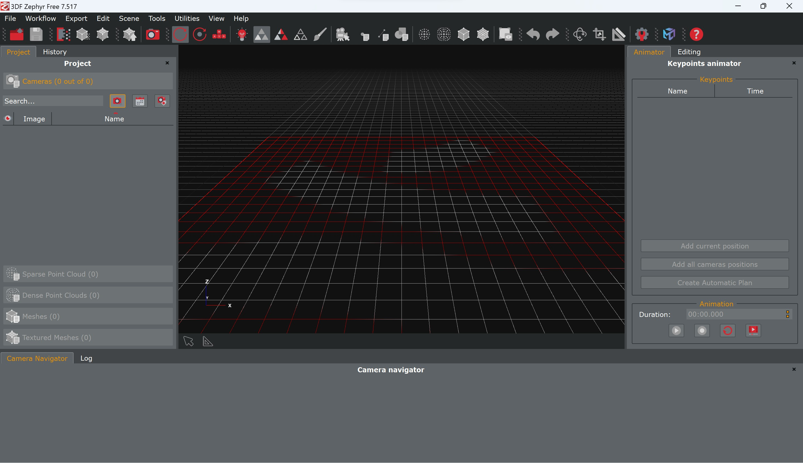Ég vissi ekkert hvar ég ætti að byrja í þessu þannig að ég fór á YouTube og leitaði að '3df zephyr tutorial' og fékk ég þá upp þetta myndband. Fyrsta skrefið er að taka margar myndir af hlutnum en í þessari fríu útgáfa er hámarkið 50 myndir þannig að ég fór í það verkefni að taka 50 myndir af gamla gítarnum mínum. Þegar ég var búinn að taka allar myndirnar ákvað ég að hlaða þeim öllum á Google Driveið mitt. Ég vildi næst fá allar myndirnar í zip file á tölvuna mínu þar sem þær voru frekar stórar þannig að ég leitaði að eftirfarandi: 'download a zip file from google drive' og fékk þá eftirfarandi myndband sem fór í gegnum öll skrefin sem þurfti að taka til þess.
Næst valdi ég New Project undir Workflow í Zephyr. Þar inni gat ég dregið allar myndirnar inn í 'Photos selection'. Næst á maður að velja Category fyrir myndina en þar valdi ég bara General þar sem enginn af hinum möguleikunum átti við og ég valdi einnig Default settings fyrir hversu nákvæm ítrunin í hugbúnaðinum er.
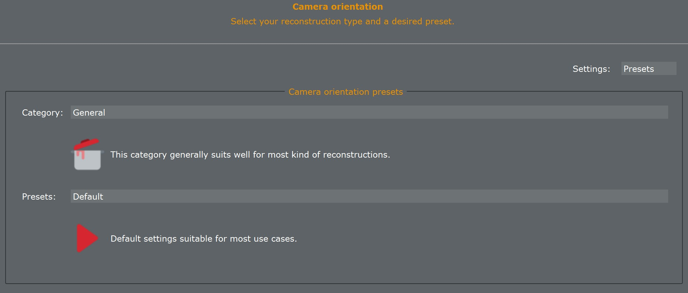Þá var næsta skref að ýta á Run. Nánast um leið og ég ýtti á Run fékk ég hins vegar upp þennan glugga:
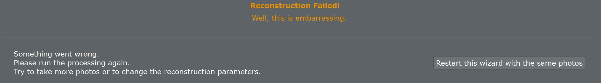Þetta virtist greinilega ekki hafa virkað hjá mér þannig að ég reyndi að breyta einhverjum stillingum en alltaf fékk ég upp sömu villumeldingu. Eftir að hafa eytt nokkrum tíma í að reyna finna út úr þessu ákvað ég að fara að reyna eitthvað annað. Ég fór í App Store í símanum og leitaði að 3D scanner og það sem kom upp efst var appið Polycam.
Ég ákvað að gefa því séns og hlaða því niður. Í þessu appi var möguleiki á því að taka myndband í kringum hlutinn sem breytti því í myndir sem gat búið til 3D skönnunina. Þetta var mjög einfalt og þægilegt ferli og þegar ég var búinn að taka myndbandið tók þetta aðeins nokkrar mínútur að búa til hlutinn. Fyrsta tilraunin í þessu hjá mér lítur svona út:
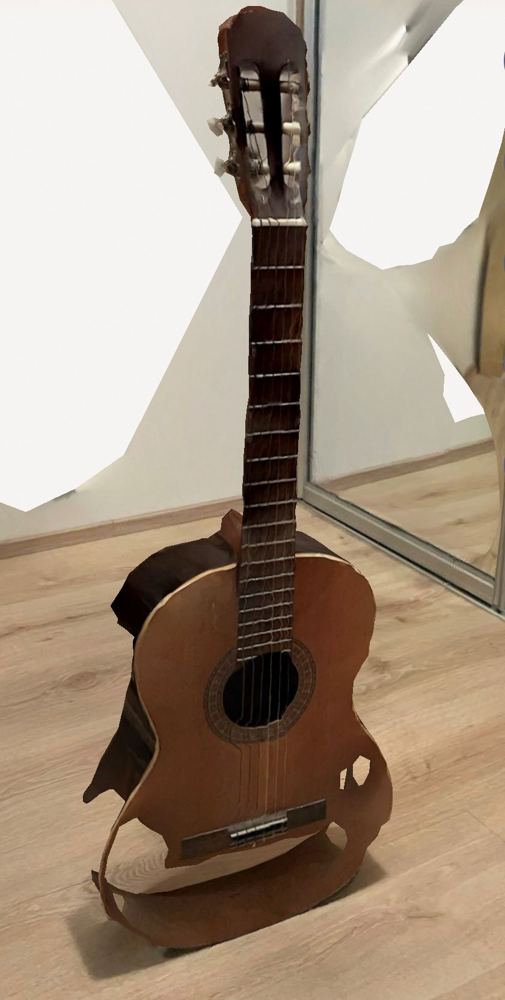Eins og má sjá er þetta ekki fullkomið þar sem að það eru nokkur göt í gítarnum og það hefur ekki tekist að skanna alveg allan hlutinn. Þetta eru hins vegar miklar framfarir frá því sem var í gangi áður en ég náði í þetta app. Ég ákvað nú að prófa að skanna einhvern aðeins minni hlut til að sjá hvort að appið gæti ráðið betur við það. Ég ákvað því að prófa að skanna boxið sem ég bjó til í verkefni 2 með geislaskeranum. Ég fór því í gegnum sama ferlið nema nú með boxið í stað gítarsins. Niðurstaðan úr þessu var hins vegar enn verri eins og má sjá á eftirfarandi mynd:
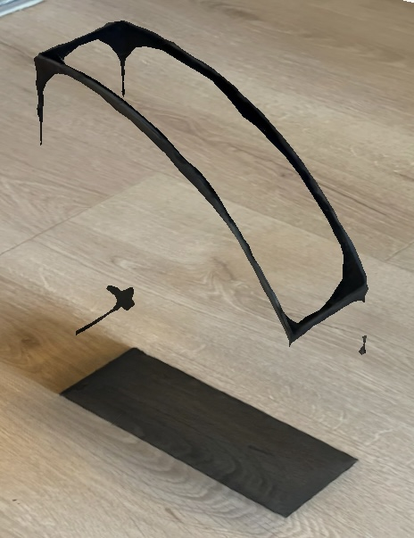Ég ákvað að gera eina tilraun enn í að skanna eitthvað annað og ákvað að prófa vatnsflösku. Farið var í gegnum sama ferli og var niðurstaðan þessi:
Þetta er alls ekki fullkomið en þetta er besta niðurstaðan sem ég gat fengið með þessu appi. Til að finna út úr því hvernig ætti að stilla myndum svona hlið við hlið fór ég inn á w3schools og fylgdi leiðbeiningum þar.
3D Prentun
Nú er komið að því að ákveða hvað ég vilji þrívíddarprenta. Skorður sem við höfum við hönnunina er að ekki væri hægt að framkvæma prentunina með frádráttar framleiðslu. Ég fór að hugsa hvort ég gæti búið til eitthvað sem væri tengt golfinu. Þannig að ég kíkti aðeins í golfsettið mitt til að sjá hvort það væri eitthvað þar sem ég gæti gert eða hvort það væri eitthvað sem mig vantaði. Aftur vildi ég finna eitthvað að búa til sem ég væri gagnlegt og ég gæti notað. Eftir að hafa hugsað í nokkurn tíma hvað ég gæti gert fékk loksins ágætis hugmynd. Ég ætla að hanna hlut sem ég gæti notað til að merkja golfkúlurnar mínar. Ég hef ekki átt svona í nokkurn tíma og fannst því tilvalið að búa þetta til. Ég fann gamlan svona hlut í kassa í bílskúrnum og ég mun hafa þann hlut til hliðsjónar þegar ég byrja að teikna hlutinn minn, sjá mynd.
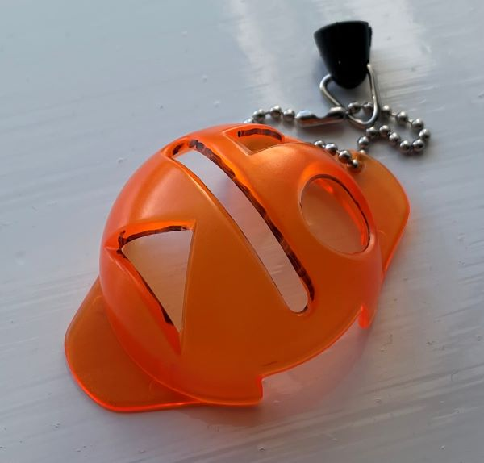Ég byrjaði á því að leita að því hvert þvermál golfkúlna væri á netinu og komst að því að það er 42.67 mm. Ég ákvað þá að innra þvermálið yrði 43 mm og ytra þvermálið 45 mm. Ég vissi að ég þyrfti að teikna hálfa kúlu og skera svo innan úr henni með 'shell'. Ég var ekki alveg viss hvernig ég ætti að fara því svo ég leitaði að 'half sphere in fusion' og fékk þetta myndband sem kom með ágætis útskýringu á því. Ég teiknaði eftirfarandi sketch:
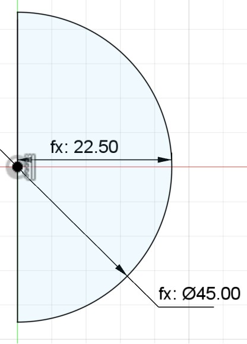Síðan revolvaði ég honum um 180° og fæ þá þessa útkomu
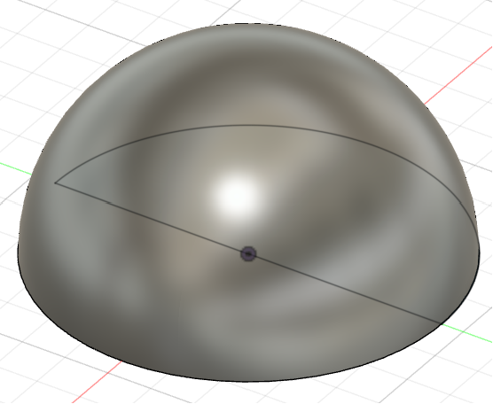Næst valdi ég shell með 1 mm þykkt til að fá innra þvermálið 43 mm. Það lítur svona út:
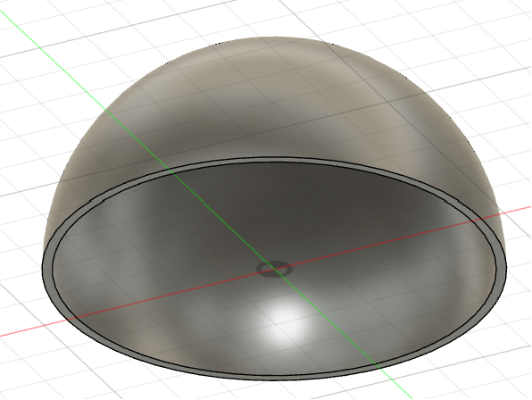Næsta skref var að búa til gatið fyrir línuna á hlutnum. Það gerði ég með því að teikna þetta:
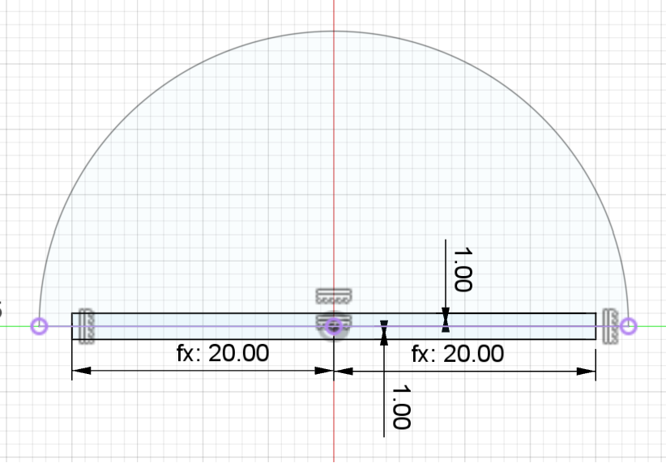Þennan sketch extrudaði ég svo út og þá er þetta útkoman:
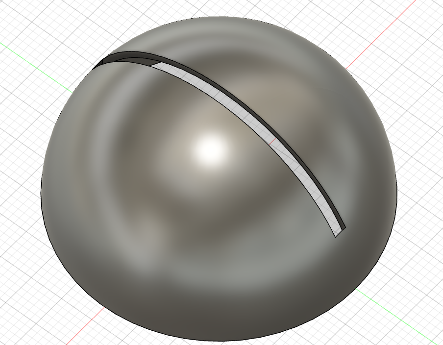Næst vildi ég bæta einhverju fleira en bara línu á hlutinn og það fyrsta sem mér datt í hug var að setja upphafsstafina mína á hann svo ég ákvað að gera það. Til þess ákvað ég að velja Text undir Create og fyrir textann valdi ég eftirfarandi stillingar
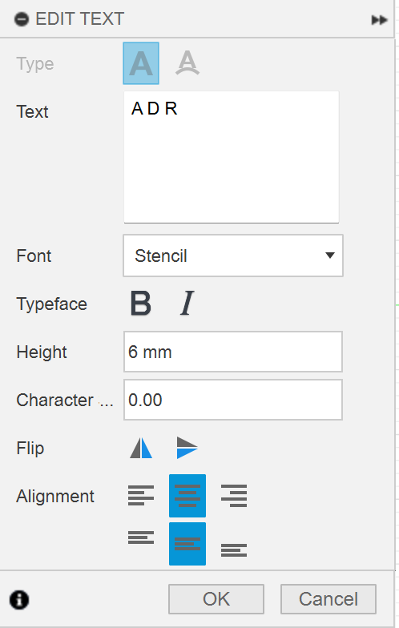Ég gat ekki valið venjulega leturgerð því þá væru ákveðnir hlutar af stöfunum sem væri ekki hægt að prenta þar sem þær væru fljótandi í loftinu. Ég varð því að finna leturgerð sem væri ekki með það vandamál og eftir nokkra leit fann ég leturgerðina Stencil sem lítur svona út:
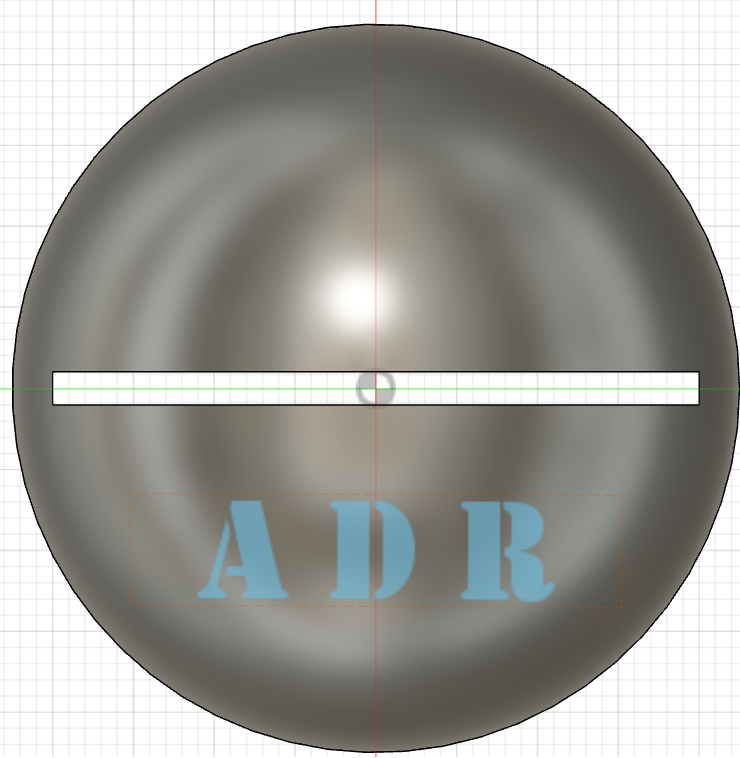Eins og með línuna þá extrudaði ég þennan sketch og fékk þá þetta út:
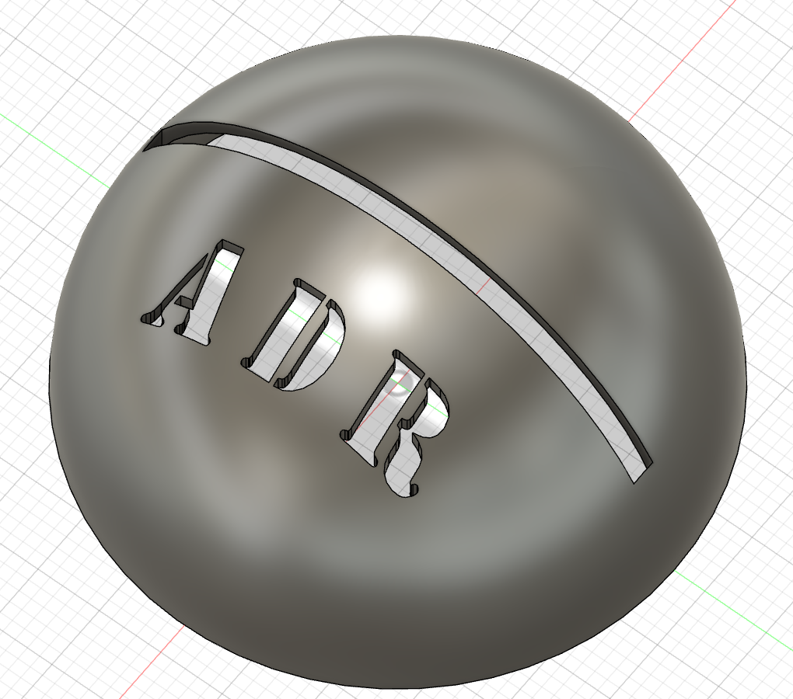Ég vildi einnig bæta einhverju á hina hliðina á hlutnum og ákvað að lokum að teikna merki Golfklúbbs Mosfellsbæjar þar. Ég leitaði því á netinu að 'insert an image in fusion' til að hlaða mynd inn í Fusion og sketcha eftir henni og fékk þá upp þetta myndband. Það sem maður þarf að gera er að velja Canvas undir Insert til að hlaða upp mynd í Fusion af tölvunni manns. Ég átti nú þegar mynd af merki Golfklúbbsins með engum bakgrunni á tölvunni minni sem ég hef notað í annað áður og hlóð því upp í Fusion. Það sem maður gerir næst er að setja nokkra punkta á myndina og síðan dregur maður línur eða þriggja punkta arkir á milli þeirra. Þetta lítur þá svona út:
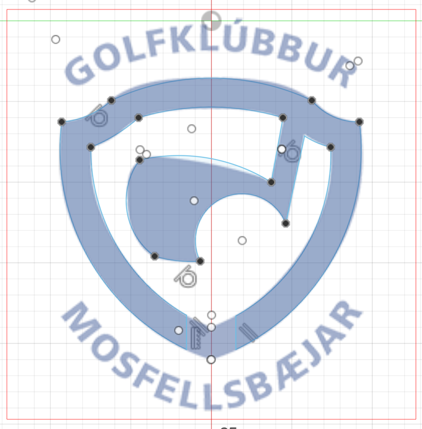Og þegar myndin er falin lítur lítur þetta svona út:
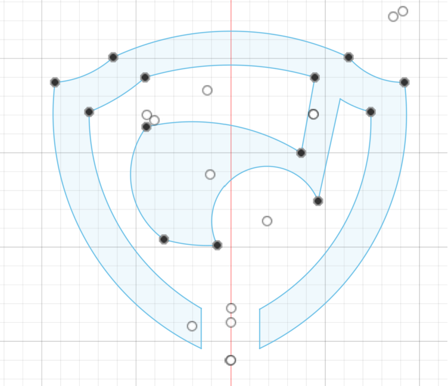Fínasta útkoma en að auki þurfti ég að búa til gat á botninn á merkinu til að miðjan á því myndi ekki fljóta í lausu lofti. Eins og áður extrudaði ég sketcinum og er þá lokaútkoman þessi:
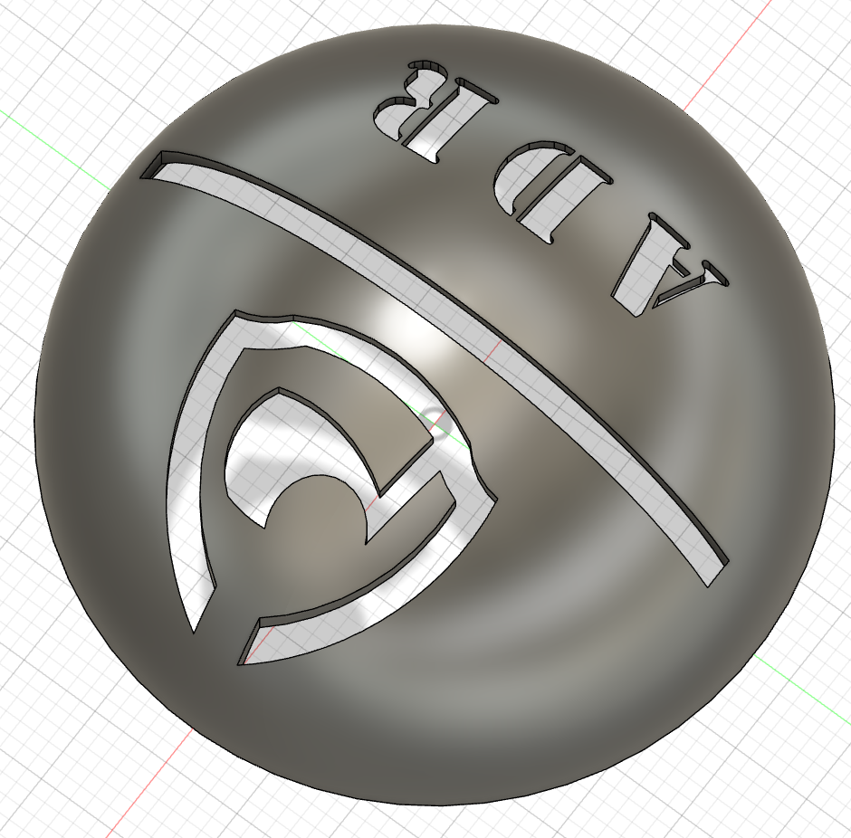Undirbúningur fyrir prentun
Þegar komið var að því að gera prófanir komst ég að því að það myndi ekki virka að prenta þetta út eins og þetta væri án stuðnings. Ég skoðaði hvernig þetta myndi líta út í Prusa Slicer sást að það myndi ekki virka að prenta GM merkið.
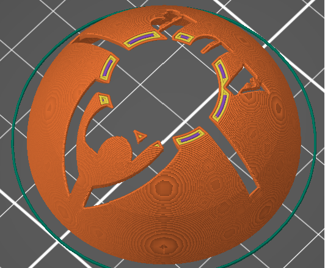Þegar farið er í gegnum prentunarferlið sést að það eru ákveðnir hlutar á merkinu sem fljóta í loftinu. Einnig var eitthvað vesen með overhang við gatið fyrir línuna. Ég ákvað því að gera smá breytingar á hlutnum mínum og fjarlægja GM merkið og setja í staðinn bara stafina GM á þá hlið þar sem hitt virkaði ekki án mikil stuðnings. Ég gerði eins og áður með upphafsstafina mína og lítur þetta þar með svona út núna:
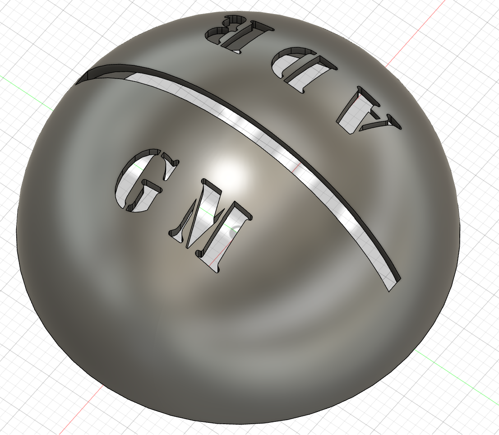Næst ákvað ég að gera prófun á Overhanginu í prentaranum. Ég fór því á netið og leitaði að '3D printer overhang test' og fékk þá þennan hlut inni á Thangs sem er sama síða og ég notaði til að hlaða upp boxinu mínu úr verkefni 2.